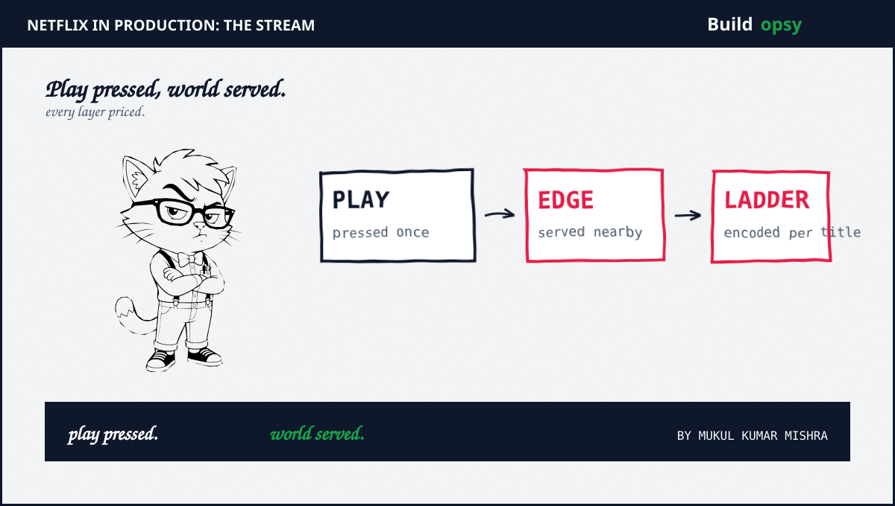

Netflix in Production: 25 Lessons From the Stream
Nine years of streaming-shaped systems taught me one discipline: play is a promise, edge serves it, plus every layer carries a price. Twenty-five lessons from button to bill, each grounded in published engineering practice with math you can re-run. The bill hides in the boundary.
TL;DR: Twenty-five Netflix lessons with live diagrams, from Open Connect to encodes plus breakers plus recommendations plus stream economics. The complete stream in one place.
By Mukul Kumar Mishra · Streaming course · Updated September 30, 2026

What you will be able to do
- Trace a play from button through steering to edge cache to encoded ladder, pricing each hop in bandwidth plus latency.
- Run gateway plus discovery plus breakers plus chaos drills that keep hundreds of services alive through zone failures.
- Serve taste from EVCache plus Cassandra, pipe trillions of events through Keystone plus Flink, plus lake history by the petabyte.
- Rank rows with recommendations, price every experiment, watch telemetry separately, schedule millions of containers, plus ship without fear.
- Total cost per streaming hour monthly, ace the design-Netflix interview round, plus ship a miniature streamer with proof.
How interviews test this course: play-flow narration first, steering plus encode math second, resilience stories third. Lesson 24 rehearses the round.
Play Is a Promise
Assumption first: pressing play starts a contract measured in rebuffers, not requests. The client fetches manifests plus picks bitrates plus refills buffers ahead of stalls. Startup under two seconds keeps the promise. Every rebuffer spends trust the catalog earned. Design playback for the worst network the member owns, not the demo wifi.
- Budget startup as DNS plus manifest plus first segment. Seconds here decide churn.
- Adapt bitrate down before the buffer empties. Late adaptation rebuffers loudly.
- Deep dive: ElevenLabs Voice, 75ms audio budgets with the same math.
Q1. Startup must stay under 2 seconds on 3G. What loads first? Seen at: backend plus mobile loops.
Q2. Rebuffers spike on one ISP nightly. What steering changes? Seen at: SRE plus network loops.
Promise priced. Now own the last mile. Lesson 02: Open Connect →
Open Connect Owns the Last Mile
Netflix serves most bytes from appliances embedded inside ISP plus IXP networks, not from distant clouds. Short paths cut transit bills plus latency plus peak-hour congestion together. Thousands of appliances form a private CDN tuned for video. The last mile is rented space run like owned infrastructure.
- Measure offload ratio: bytes from appliances over total bytes. High nineties is the target.
- Place appliances where evening peaks concentrate. Geography decides cache hit reality.
- Deep dive: Cloudflare Edge, one wrong file network-wide.
Q1. Peak traffic triples at 8 PM in one metro. Where do bytes come from? Seen at: backend plus network loops.
Q2. ISP link saturates during finals. What absorbs the spike? Seen at: SRE plus network loops.
Mile owned. Now fill before demand. Lesson 03: Fill →
Fill Windows Fill Before Demand
New titles deploy to appliances during configured fill windows before release, not after the crowd arrives. Popularity prediction decides which titles land where plus how many copies each earns. Faulty encodes get replaced through the same rails. Proactive caching turns launch night from stampede into routine.
- Size fill bandwidth from title bytes times appliance count over window hours. Missed windows mean launch pain.
- Prioritize by predicted popularity per region. Global hits fill everywhere, niches fill near fans.
- Deep dive: ShareChat Assignment, predicted placement with receipts.
Q1. A global launch lands Friday 8 PM. When does the title reach edge? Seen at: backend plus SRE loops.
Q2. Faulty encode needs global replacement in hours. What rails carry it? Seen at: platform plus SRE loops.
Filled early. Now steer each play. Lesson 04: Steering →
Steering Picks the Path
Each play session gets steered to the best source for its network moment: embedded appliance first, peers next, origin last. Health plus load plus congestion feed the choice continuously. Static DNS assignments cannot react to evening peaks. Steering turns topology into a live decision.
- Track served-from-edge percentage per metro per hour. Dips reveal congestion before complaints.
- Fail over mid-session without rebuffer. Sticky assignments die with sick servers.
- Deep dive: GCP us-central1, pinned control drains queues.
Q1. Appliance sickens mid-evening. Where do its sessions go? Seen at: SRE plus network loops.
Q2. Two paths tie on latency. What breaks the tie? Seen at: backend plus network loops.
Path picked. Now encode smarter. Lesson 05: Encode →
Per-Title Encode Ladders
Fixed bitrate ladders waste bits on cartoons plus starve action scenes. Per-title encoding shapes each ladder to content complexity, saving roughly a fifth of bandwidth at equal quality. Per-shot goes finer still. Codecs march forward with AV1 cutting further. Encoding is the cheapest bandwidth Netflix buys.
- Compare bits per quality point across titles. Flat ladders overspend simple scenes.
- Re-encode the head catalog on codec jumps. Back catalog pays the march forward.
- Deep dive: LLM Inference Cost, per-task shaping with the same math.
Q1. Animation plus action share one ladder. What changes per title? Seen at: backend plus media loops.
Q2. AV1 promises 30 percent savings. What migrates first? Seen at: platform plus media loops.
Bits shaped. Now guard the door. Lesson 06: Zuul →
Zuul Guards the Door
Zuul fronts every request into the cloud with routing plus filters plus throttling plus brownouts. Dozens of clusters pass more than a million requests per second to a hundred backend clusters. Filters shed CPU-heavy features under overload instead of dying. The door decides what the house survives.
- Size gateway capacity from peak RPS times filter cost. Brownouts trade features for survival.
- Throttle device retries at the edge. Client storms die at the door, not inside.
- Deep dive: Coinbase MSK, edge math that held plus core that stuck.
Q1. Retry storm triples inbound RPS. What sheds first? Seen at: SRE plus backend loops.
Q2. CPU-heavy personalization strains the door. What degrades gracefully? Seen at: platform plus backend loops.
Door held. Now find services. Lesson 07: Eureka →
Eureka Names the Fleet
Hundreds of services with thousands of instances churn hourly through deploys plus autoscaling. Eureka keeps the registry so callers find live instances without frozen configs. Heartbeats plus evictions prune the dead within seconds. Discovery without health is a phone book of ghosts.
- Size heartbeat intervals against eviction lag. Slow pruning routes to corpses.
- Cache registry reads client-side with refresh. Registry outages must not halt calls.
- Deep dive: etcd Handshake, silent sockets billed per connection.
Q1. Deploy replaces 500 instances in minutes. How do callers track them? Seen at: backend plus platform loops.
Q2. Registry blips for 30 seconds. What keeps traffic flowing? Seen at: SRE plus backend loops.
Fleet named. Now isolate failure. Lesson 08: Hystrix →
Hystrix Breaks Cascades
Tens of billions of calls daily run wrapped in breakers that isolate latency plus stop cascades plus serve fallbacks. Thread pools bulkhead slow dependencies. Open breakers fail fast instead of queueing doom. Dashboards stream metrics in seconds for recovery. Resilience is a library plus a habit.
- Tune timeouts from p99 plus headroom. Generous timeouts queue, tight ones flap.
- Serve degraded fallbacks per dependency. Static rows beat blank screens.
- Deep dive: Salesforce Queue, stuck logins with no breaker.
Q1. Dependency p99 triples at peak. What contains the blast? Seen at: backend plus SRE loops.
Q2. Breaker flaps all afternoon. Timeout or threshold moves? Seen at: SRE plus platform loops.
Cascades broken. Now budget retries. Lesson 09: Retries →
Retry Budgets Cap Storms
Retries multiply calm traffic into storms when every client retries blindly. Budgets cap retry share near a fifth of traffic with backoff plus jitter. Device retries get throttled at the edge before entering. Unbudgeted retries turn one slow dependency into a fleet-wide queue. The incident collects every loan.
- Price every policy at 6x calm load before approving. Numbers veto hopeful configs.
- Run the retry-storm calculator with your RPS. Storms modeled beat storms survived.
- Deep dive: Kafka Rebalance Storm, 6x amplification modeled.
Q1. Three services retry one slow API. What caps the product? Seen at: backend plus SRE loops.
Q2. Budget exhausts nightly at 8 PM. What moves: budget or dependency? Seen at: SRE plus platform loops.
Storms capped. Now rehearse fire. Lesson 10: Chaos →
Chaos as a Discipline
Chaos Monkey kills instances in production so weaknesses surface on schedule, not launch night. Chaos Kong evacuates whole regions to prove multi-region claims. Game days extend the drill to people plus process. Systems never killed in practice die in public. Failure rehearsed is failure discounted.
- Measure detection plus recovery minutes per drill. Shrinking means the drills work.
- Start with staging, then prod off-peak, then peak with blast limits. Courage needs guardrails.
- Deep dive: AWS Thermal, cooling failed without rehearsal.
Q1. Leadership fears prod chaos. What drill runs first? Seen at: SRE plus platform loops.
Q2. Region evacuation stalls halfway. What proved missing? Seen at: SRE plus backend loops.
Fire rehearsed. Now cache hot. Lesson 11: EVCache →
EVCache Serves at 1ms
EVCache holds tier-0 working sets with millisecond SLAs at hundreds of thousands of requests per second. Trillions of daily operations ride memcached plus sidecars plus global replication. SSD tiers cut personalization storage cost with microsecond penalties. Hot paths without EVCache-equivalents pay database prices per read.
- Size working sets from hot keys, not totals. Ten percent of keys earn the RAM.
- Replicate personalization cross-region async. Stale taste beats unavailable taste.
- Deep dive: MoEngage Millisecond, owned NVMe at 1ms.
Q1. Personalization reads spike 10x at 8 PM. What serves them? Seen at: backend plus data loops.
Q2. RAM bill doubles yearly. What tier absorbs cold taste? Seen at: data plus platform loops.
Hot cached. Now persist globals. Lesson 12: Cassandra →
Cassandra Holds the Catalog
Catalog plus viewing state ride Cassandra across regions with AP semantics: available under partitions, reconciled after. Chaos runs against production clusters to prove node loss is routine. Monitoring plus auto-remediation keep thousands of nodes honest. Shared-nothing scales where shared-everything stalls.
- Size replication factor against quorum latency. Factor 3 with local quorum balances well.
- Repair plus compaction schedules are production work, not chores. Skipped maintenance compounds.
- Deep dive: Discord Messages Scale, 177 nodes humbled.
Q1. Region partitions for an hour. Reads or writes bend? Seen at: backend plus data loops.
Q2. Node loss during peak goes unnoticed. What architecture earns that? Seen at: SRE plus data loops.
Catalog held. Now stream events. Lesson 13: Keystone →
Keystone Pipes Trillions
Viewing plus diagnostic plus playback events flow through a Kafka-fronted pipeline into S3 plus search plus secondary streams. Routing services fan each event to the sinks that need it. Backpressure plus QoS keep floods orderly. Pipelines without routing become swamps with retention.
- Size brokers from peak events per second times retention days. Peaks decide, averages lie.
- Separate operational metrics into Atlas-style telemetry. Mixed pipes drown signals.
- Deep dive: Roblox Kafka, 18 trillion daily with tiers.
Q1. Launch night triples events. What absorbs the burst? Seen at: data plus backend loops.
Q2. One sink lags hours. What isolates the slow reader? Seen at: data plus platform loops.
Events piped. Now compute nearline. Lesson 14: Flink →
Flink Computes Nearline
Stream processors turn raw events into trending rows plus quality signals within minutes. Chaos-tested jobs survive instance kills mid-window. Exactly-once semantics protect counts that pay. Batch stays for history, streams decide tonight. Freshness without correctness misleads faster.
- Size state backends from window bytes times key cardinality. State decides cost.
- Checkpoint to durable stores on short intervals. Long gaps replay expensively.
- Deep dive: Razorpay Kafka, queue math across systems.
Q1. Trending needs five-minute freshness. Batch or stream? Seen at: data plus backend loops.
Q2. Job dies mid-window at peak. What restores exact counts? Seen at: data plus platform loops.
Nearline fresh. Now lake the history. Lesson 15: Lake →
The Lake Keeps History
S3 plus Spark plus open table formats hold viewing history by the petabyte for training plus finance plus content bets. Nightly jobs load terabytes per dataset into serving stores. Partitioning plus file sizing decide query bills. Lakes without lifecycle rules store every experiment at full price.
- Price scans per query from bytes read. Partition pruning cuts most bills tenfold.
- Compact small files weekly. File count taxes every query like rows do.
- Deep dive: Notion Lake Cost, lake bills with the same math.
Q1. Analyst scans cost 10x this quarter. What prunes them? Seen at: data plus platform loops.
Q2. Nightly load misses its window. What parallelizes safely? Seen at: data plus SRE loops.
History kept. Now taste by math. Lesson 16: Taste →
Recommendations Earn the Play
Personalization ranks rows plus artwork per member from viewing history plus context. Offline training feeds nearline serving through cached feature stores. SSD tiers cut the storage bill for taste data. Rows without relevance waste the most expensive pixels on screen.
- Measure take-rate per row position. Top rows carry multiples of lower ones.
- Precompute nightly plus adjust nearline. Stale models bore, live models cost.
- Deep dive: Perplexity Engine, retrieval bills per question.
Q1. Row take-rate halves this month. Model or presentation fault? Seen at: data plus product loops.
Q2. Feature store bill doubles. What tier absorbs cold taste? Seen at: data plus platform loops.
Taste ranked. Now test everything. Lesson 17: Tests →
Experimentation Prices Bets
Hundreds of concurrent experiments test artwork plus algorithms plus flows with statistical guardrails. Canary analysis promotes winners plus rolls back regressions automatically. Untested launches are opinions with deploy rights. Bets without measurements are expenses.
- Size samples from minimum detectable effect. Small wins need big crowds.
- Gate launches on north-star plus guardrail metrics together. Single-metric wins lie.
- Deep dive: Swappie Revenue, ten points bought with milliseconds.
Q1. Artwork test lifts clicks but cuts plays. Ship or kill? Seen at: product plus data loops.
Q2. Canary regresses latencies 5 percent. What decides rollback? Seen at: SRE plus backend loops.
Bets priced. Now watch everything. Lesson 18: Atlas →
Atlas Watches Everything
Operational metrics flow through dedicated telemetry, never the event pipeline. Dimensional time series with fast queries catch incidents in seconds. Dashboards plus alerts share one signal source. Mixed pipes drown the signals that page. Telemetry is the nervous system, budgeted like one.
- Budget series cardinality per service. Unbounded labels bankrupt stores.
- Alert on symptoms plus burn rates, not raw CPU. Paged humans need meaning.
- Deep dive: NATS Four Hours, signals versus noise.
Q1. Cardinality explodes after a deploy. What caps it? Seen at: SRE plus observability loops.
Q2. Alerts fire on CPU while users hurt elsewhere. What re-aims them? Seen at: SRE plus platform loops.
Signals separate. Now schedule work. Lesson 19: Titus →
Titus Schedules Millions
Millions of containers weekly ride Titus across EC2 fleets with bin-packing plus autoscaling. Batch plus service plus GPU workloads share one scheduler with different promises. Autoscaling releases idle capacity back to encoding jobs. Schedulers without defrag strand cores while capacity idles.
- Measure bin-pack efficiency weekly. Stranded cores are rent without work.
- Separate latency-sensitive from batch-tolerant queues. Mixed promises break both.
- Deep dive: Kubernetes Course, fifteen on-call lessons.
Q1. GPU jobs starve behind batch queues. What separates them? Seen at: platform plus SRE loops.
Q2. Evening peak needs 30 percent more cores. What frees them? Seen at: SRE plus platform loops.
Work scheduled. Now ship safely. Lesson 20: Spinnaker →
Spinnaker Ships Safely
Continuous delivery pipelines bake plus canary plus promote across regions with automatic rollback. Hundreds of deploys daily stay boring through gates. Canary analysis compares metrics before full rollout. Deploys without canaries are leaps with changelogs.
- Size canary traffic plus duration from error budget burn. Thin canaries miss regressions.
- Halt pipelines on canary regression automatically. Human gates sleep at 3 AM.
- Deep dive: Discord Voice Herd, safety checks plus grace.
Q1. Canary passes but full rollout burns. What stage missed it? Seen at: SRE plus platform loops.
Q2. Deploy velocity stalls on manual gates. What automates safely? Seen at: platform plus SRE loops.
Deploys boring. Now predict capacity. Lesson 21: Capacity →
Predictive Capacity Beats Panic
Evening peaks arrive on schedule, so capacity gets predicted, not panicked. Forecasts from history plus launches plus marketing set fleets before demand. Predictive scaling buys steady state cheap plus bursts on time. Reactive scaling buys the peak at premium plus misses the start.
- Forecast peak cores from last four same-weekday evenings plus launch calendar. History predicts most peaks.
- Pre-warm caches plus fleets before tentpoles. Cold starts during premieres rebuffer loudly.
- Deep dive: Azure WAN, five hours unprepared.
Q1. Tentpole launches Friday. When does capacity land? Seen at: SRE plus capacity loops.
Q2. Forecast misses by 20 percent upward. What absorbs it? Seen at: SRE plus platform loops.
Capacity preset. Now total the month. Lesson 22: Economics →
Stream Economics Totaled
Streaming bills in transit plus compute plus storage plus licensing per viewing hour. Owned edge plus shaped encodes cut the dearest line first. Regional clouds price the same play differently. Cost per streaming hour, tracked monthly, is the north-star efficiency metric. Bills without per-hour math hide in averages.
- Attribute cost per streaming hour per region. Averages hide the dearest metro.
- Negotiate transit with offload ratios as leverage. Edge share is bargaining power.
- Deep dive: Figma Multiplayer Cost, per-unit bills that close.
Q1. One metro costs 3x per hour. What lever moves first? Seen at: platform plus SRE loops.
Q2. Codec migration promises 25 percent savings. What proves it? Seen at: backend plus media loops.
Month totaled. Now feed the machine. Lesson 23: Studio →
Studio Supply Chain Feeds Play
Titles travel from cameras through ingest plus QC plus mezzanine masters plus encodes plus metadata before any play. Faulty masters get caught by automated checks plus human eyes. Supply delays become launch delays with marketing attached. Content ops is the factory upstream of every lesson above.
- Track hours from ingest to playable per title. Bottlenecks live in QC queues.
- Version masters immutably. Re-encodes from lost masters cost quarters.
- Deep dive: Doltgres Data Loss, masters matter everywhere.
Q1. Launch slips a week on QC backlog. What parallelizes safely? Seen at: platform plus media loops.
Q2. Master corrupts after encodes ship. What restores the chain? Seen at: SRE plus media loops.
Factory fed. Now ace the round. Lesson 24: Interview →
Design Netflix Interview Round
The iconic round compresses this course into forty-five minutes: clarify scale, sketch play flow, price bandwidth, pick stores, cache hot, queue async, break boxes, close with bills. Examiners probe steering plus encodes plus breakers hardest. Candidates with per-hour math stand apart. Speak the stream aloud.
- Rehearse the full flow in forty minutes with five reserved for questions. Pacing is scored.
- Open with numbers, close with cost. Middles vary, bookends decide.
- Deep dive: Interview Bootcamp, fifteen rounds rehearsed.
Q1. Design video sharing for 50M daily viewers. Sketch plus price it. Seen at: backend plus full-stack loops.
Q2. Steering plus encodes draw the hardest probes. What numbers answer them? Seen at: backend plus media loops.
Round rehearsed. Now ship proof. Lesson 25: Capstone →
Ship One Stream
Capstone: build a miniature streamer in six weeks. Weeks one plus two serve static ladders with adaptive switching. Weeks three plus four add edge caching plus steering plus breakers. Weeks five plus six load-test plus chaos-drill plus price per streaming hour. Graduates carry plays, not slides.
- Exit criteria: sub-2s startup plus zero rebuffers at 5x load plus bill per hour shown.
- Present the design as the interview round from lesson 24. Proof doubles as prep.
- Deep dive: System Design Course, the fifteen-lesson companion.
Q1. Demo your streamer under injected zone failure. What stays smooth? Seen at: backend plus SRE loops.
Q2. Price your streamer per thousand hours. What dominates? Seen at: backend plus platform loops.
Course complete. Start the companion. System Design Course →
Sources plus further viewing
Architecture facts above follow the Netflix Technology Blog series linked here. Modeled numbers in lessons are labeled estimates, not Netflix financials.
- Netflix TechBlog: Content Popularity for Open Connect
- Netflix TechBlog: Netflix plus Fill on proactive caching
- Netflix TechBlog: Open Sourcing Zuul 2 at 1M RPS
- Netflix TechBlog: Introducing Hystrix for resilience
- Netflix TechBlog: Caching for a Global Netflix
- Netflix TechBlog: Caching from RAM to SSD
- Netflix TechBlog: Evolution of the Data Pipeline to Keystone
- Netflix TechBlog: Can Spark Streaming survive Chaos Monkey
- Netflix TechBlog: Titus containers at 3M per week
- Netflix TechBlog: Auto Scaling Production Services on Titus